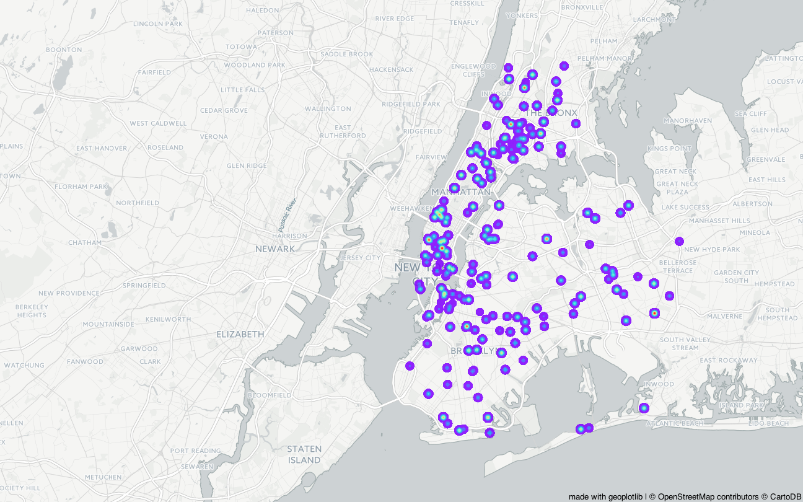
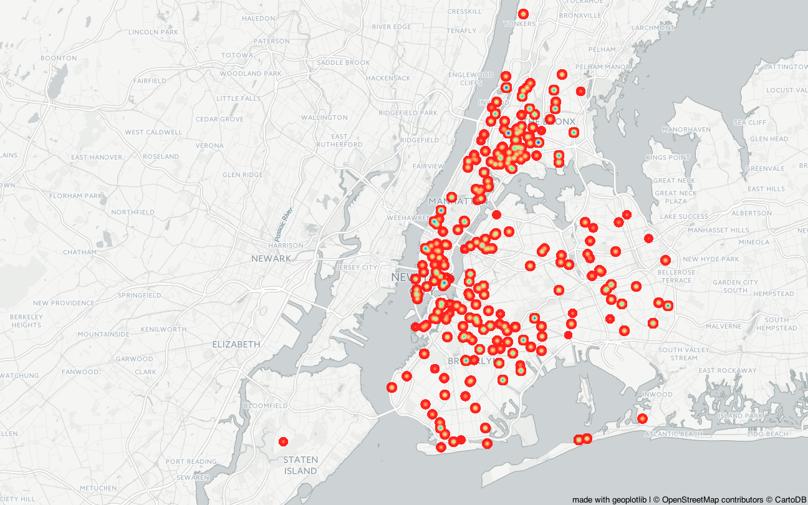
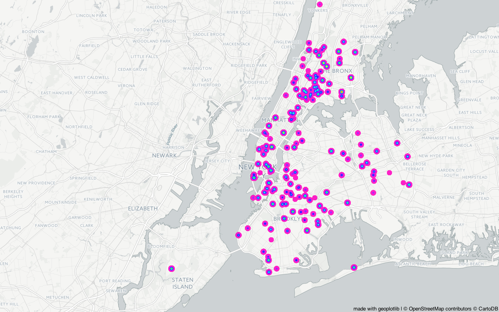
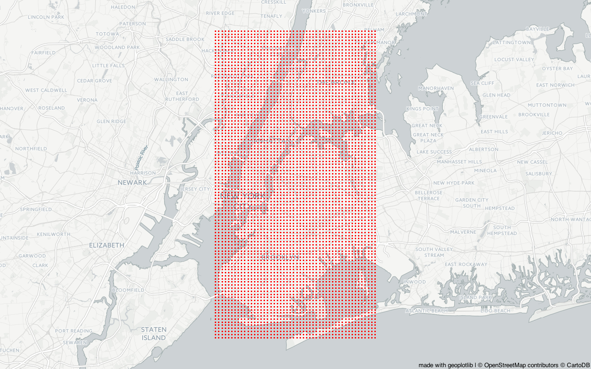
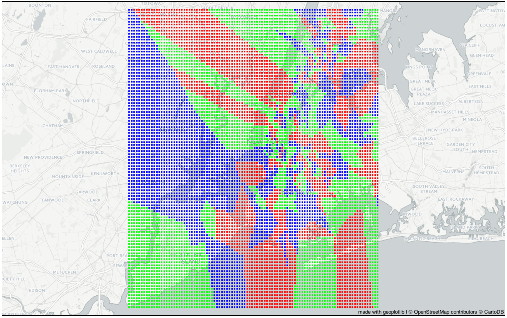
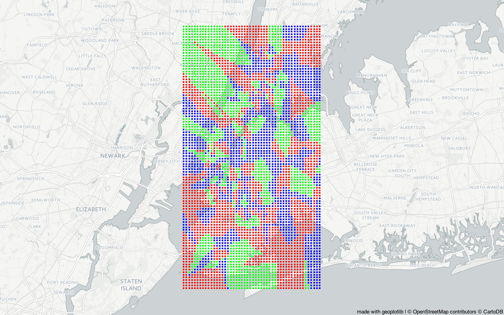
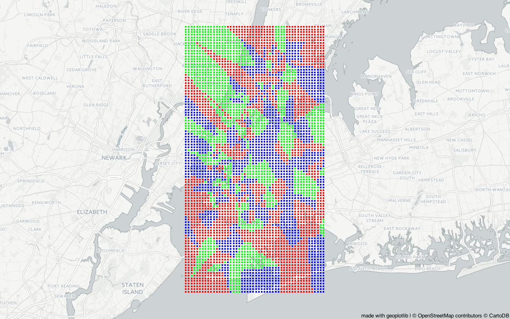

The Project
In this section, we perform KNN-classification (K-nearest neighbours). The input in the algorithm consists of the
k closest training-examples we have. The output is a class membership, where an object is assigned to the class most
common among its k nearest neighbours. We classify examples based on if the dropout rate in the neighbours is
low (under 5%) medium (5-25%) or high (over 25%). We use all the data we have, with every year and every planned study length.
First, we visualize the low, medium and high dropout rates in the city. We keep the frame large as New York City
is far from being square so it's a bit hard to keep in all the examples. We start with low rates:

Clearly, a large portion of the school has low dropout rates, which are spread all over the city.
Medium dropout rates:

High dropout rates:

We note that the high dropout rates stretch a little higher up to the north (also to Staten Island, but since we only have two
examples from there it's not really data you can analyze).
Now we make a grid of the city. Since we only have two data points from Staten Island, and have to involve a large part of the state
that is not in the city just to keep the district on the map, we drop it.

After balancing the datasets so they all contain 3037 samples (the number of high dropout rates in the city),
we perform knn-classification for 5, 15 and 30 neighbours. Note that the green points indicate low dropout rates,
the blue ones indicate medium dropout rates and the red ones high.
Five neighbours

Fifteen neighbours

Thirty neighbours

It was hard to visualize this when including Staten Island, given that the city is so far from being square.
The grid-points outside of the city limits didn't have any values so they generally became large clusters of
the same colors. After limiting the map to the city, there is more going on inside of the clusters. Inside the city,
they become larger with a growing number of neighbours, as expected. Every district contains some of every colour, so
it's hard to use this classification to classify districts as a whole, although it would be possible to use the plot to
choose a neighbourhood to live in, by preference of highschool dropout rates. :)